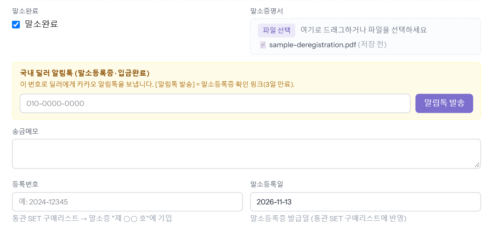
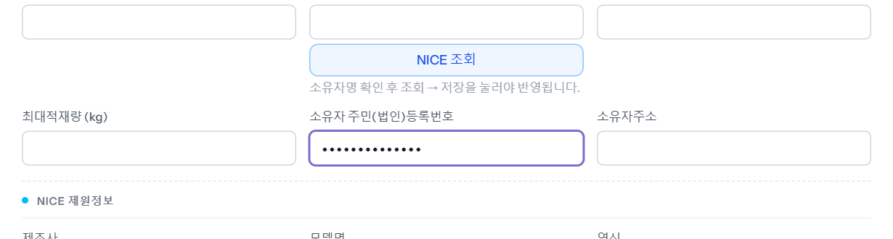
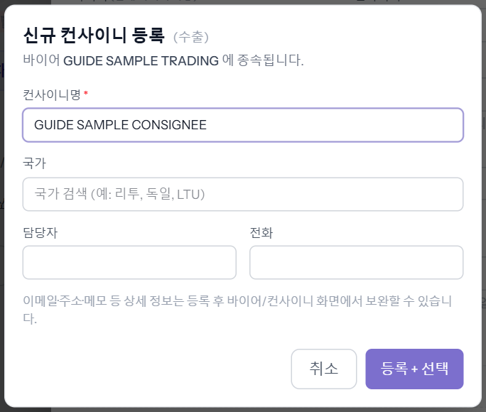
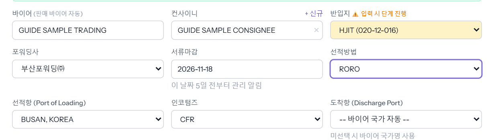
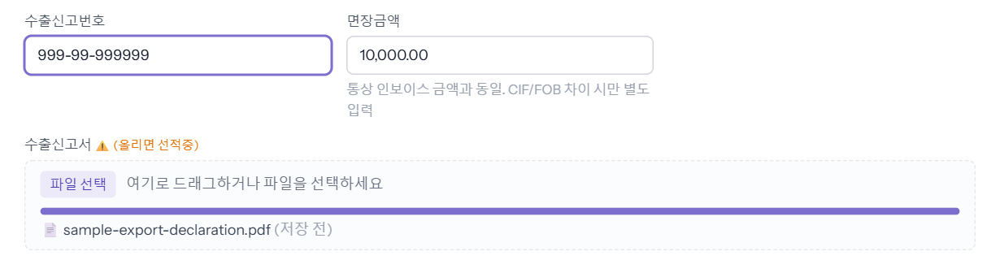
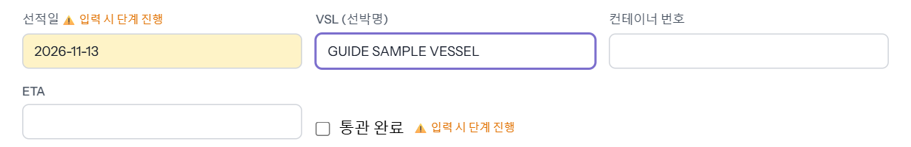
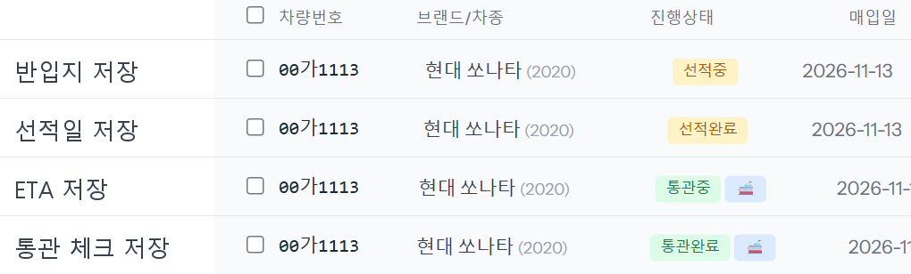
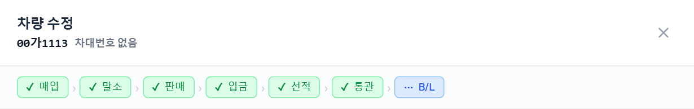

판매된 차를 배에 실어 보내는 동안 「수출」 탭을 위에서 아래로 채우는 단계입니다. 수출통관이 합니다. 칸을 채우고 저장할 때마다 진행상태가 선적중 → 선적완료 → 통관중 → 통관완료로 넘어갑니다.
2026-11-13 로컬 화면에서 「수출통관」 계정으로 앞 씬의 예시 차량 00가1113(판매완료 · 완납)을 한 단계씩 저장하며 찍었습니다. 컨사이니·선박명·신고번호·서류는 모두 가이드용 가짜 값입니다.
말소를 하지 않은 채 수출 탭을 저장하면 창 위에 이렇게 뜨고 저장되지 않습니다.
「매입」 탭 아래쪽에서 말소완료에 체크하고, 말소증명서 파일을 올리고, 말소등록일(말소등록증 발급일)을 넣은 뒤 저장합니다.

말소완료에 체크하려면 「기본정보」 탭의 소유자 주민(법인)등록번호가 있어야 합니다. 비어 있으면 「말소 처리에는 소유자 주민(법인)등록번호가 필수입니다 — 기본정보 탭.」이 뜹니다. 보통은 NICE 조회 때 채워지고, 칸은 가려진 점(●)으로 보입니다.

※ 예시 차량은 NICE 조회를 하지 않아 실존할 수 없는 가짜 번호를 넣었습니다. 딜러에게 말소등록증을 알림톡으로 보내는 방법은 씬 「말소와 말소등록증 전달」을 보세요.
차를 열고 「수출」 탭으로 갑니다. 맨 위 초록 칸은 이 차가 수출 단계로 넘어가도 되는지 보여 줍니다(예시: 「수출 진입 가능 — 입금률 100%」). 「바이어」는 판매 탭의 바이어가 자동으로 들어옵니다.
「컨사이니」(실제로 차를 받는 사람)는 목록에서 고르거나, 처음이면 칸 오른쪽 위 [+ 신규]를 누릅니다. 컨사이니명(필수)·국가·담당자·전화를 넣고 [등록 + 선택]을 누르면 「신규 컨사이니 등록 완료」가 뜨고 칸에 들어갑니다. 컨사이니는 이 바이어 아래에 등록됩니다.

예시는 반입지 HJIT, 부산포워딩㈜, 서류마감 2026-11-18, RORO, BUSAN, KOREA, CFR, 도착항은 비워 두었습니다.

[수정 저장]을 누릅니다. 수출통관 계정은 확인 창 없이 바로 저장되고, 목록의 진행상태가 「선적중」이 됩니다.

저장하면 진행상태는 그대로 「선적중」입니다. 저장한 뒤 신고서 파일 이름은 알아보기 어려운 영문·숫자 이름으로 바뀌어 보이는데, 눌러서 열 수 있으면 정상입니다.
배가 뜬 날을 선적일에, 배 이름을 VSL에 넣습니다. 컨테이너로 보냈으면 컨테이너 번호도 넣습니다(RORO면 비웁니다).

저장하면 「선적완료」가 됩니다.
배가 도착항에 닿을 예정일을 ETA에 넣습니다. 예시는 2026-12-10입니다.
저장하면 「통관중」이 되고, 옆에 배 모양 🚢(운항중) 표시가 붙습니다.
국내 수출통관 서류가 다 끝났으면 통관 완료에 체크합니다.
저장하면 「통관완료」가 됩니다. 배가 아직 가는 중이면 🚢 표시는 그대로 남습니다.
예시 차량의 목록 진행상태가 저장할 때마다 이렇게 바뀌었습니다(신고서만 올린 ② 단계는 「선적중」 그대로라 뺐습니다).

창 위 진행 줄도 「선적」·「통관」에 초록 체크가 붙고, 다음 할 일인 「B/L」이 파란색(진행 중)으로 바뀝니다.
